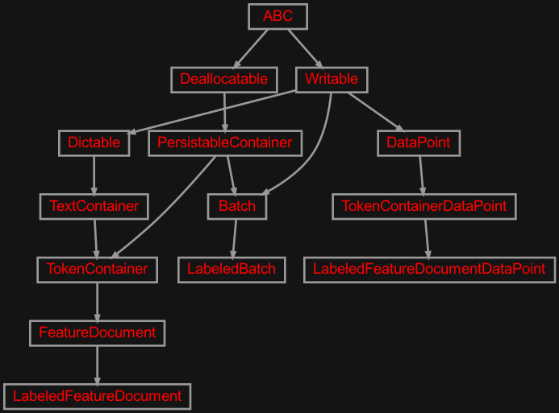
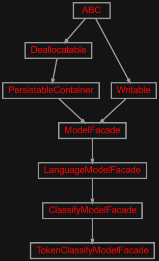
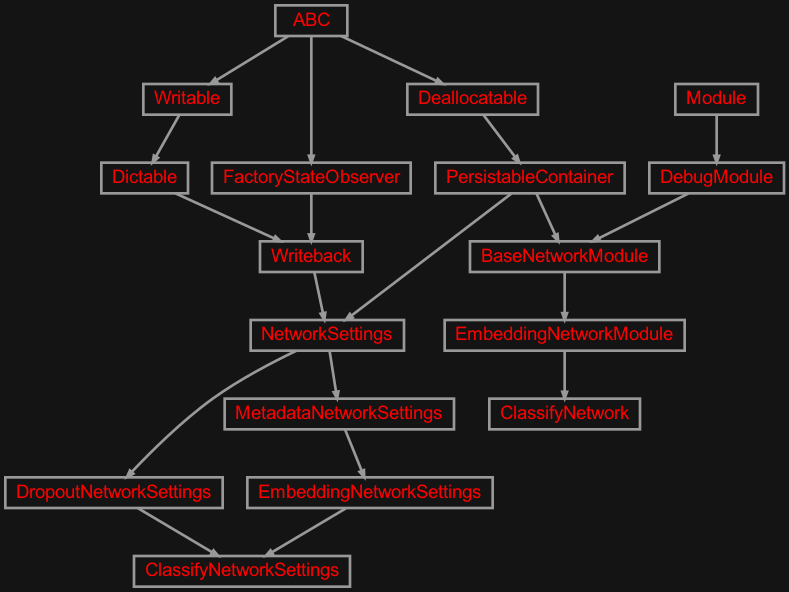
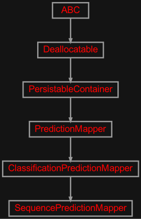

zensols.deepnlp.classify package#
Submodules#
zensols.deepnlp.classify.domain#

Domain objects for the natural language text classification atsk.
- class zensols.deepnlp.classify.domain.LabeledBatch(batch_stash, id, split_name, data_points)[source]#
Bases:
BatchA batch used for labeled text, usually used for text classification. This batch class serves as a way for very basic funcationly, but also provides an example and template from which to desigh your own batch implementation for your custom application.
- COUNTS_ATTRIBUTE = 'counts'#
The feature counts attribute name.
- DEPENDENCIES_ATTRIBUTE = 'dependencies'#
The dependency feature attribute name.
- DEPENDENCY_EXPANDER_ATTRIBTE = 'transformer_dep_expander'#
Expands dependency tree spaCy features to transformer wordpiece alignment.
- EMBEDDING_ATTRIBUTES = {'fasttext_crawl_300_embedding', 'fasttext_news_300_embedding', 'glove_300_embedding', 'glove_50_embedding', 'transformer_fixed_embedding', 'transformer_trainable_embedding', 'word2vec_300_embedding'}#
All embedding feature section names.
- ENUMS_ATTRIBUTE = 'enums'#
The enumeration feature attribute name.
- ENUM_EXPANDER_ATTRIBUTE = 'transformer_enum_expander'#
Expands enumerated spaCy features to transformer wordpiece alignment.
- FASTTEXT_CRAWL_300_EMBEDDING = 'fasttext_crawl_300_embedding'#
The configuration section name of the fasttext crawl embedding
FastTextEmbedModelclass.
- FASTTEXT_NEWS_300_EMBEDDING = 'fasttext_news_300_embedding'#
The configuration section name of the fasttext news embedding
FastTextEmbedModelclass.
- GLOVE_300_EMBEDDING = 'glove_300_embedding'#
The configuration section name of the glove embedding
GloveWordEmbedModelclass.
- GLOVE_50_EMBEDDING = 'glove_50_embedding'#
The configuration section name of the glove embedding
GloveWordEmbedModelclass.
- LANGUAGE_ATTRIBUTES = {'counts', 'dependencies', 'enums', 'stats', 'transformer_dep_expander', 'transformer_enum_expander'}#
All linguistic feature attribute names.
- LANGUAGE_FEATURE_MANAGER_NAME = 'language_vectorizer_manager'#
The configuration section of the definition of the
FeatureDocumentVectorizerManager.
- MAPPINGS = BatchFeatureMapping(label_attribute_name='label', manager_mappings=[ManagerFeatureMapping(vectorizer_manager_name='classify_label_vectorizer_manager', fields=(FieldFeatureMapping(attr='label', feature_id='lblabel', is_agg=True, attr_access=None, is_label=False),)), ManagerFeatureMapping(vectorizer_manager_name='language_vectorizer_manager', fields=(FieldFeatureMapping(attr='glove_50_embedding', feature_id='wvglove50', is_agg=True, attr_access='doc', is_label=False), FieldFeatureMapping(attr='glove_300_embedding', feature_id='wvglove300', is_agg=True, attr_access='doc', is_label=False), FieldFeatureMapping(attr='word2vec_300_embedding', feature_id='w2v300', is_agg=True, attr_access='doc', is_label=False), FieldFeatureMapping(attr='fasttext_news_300_embedding', feature_id='wvftnews300', is_agg=True, attr_access='doc', is_label=False), FieldFeatureMapping(attr='fasttext_crawl_300_embedding', feature_id='wvftcrawl300', is_agg=True, attr_access='doc', is_label=False), FieldFeatureMapping(attr='transformer_trainable_embedding', feature_id='transformer_trainable', is_agg=True, attr_access='doc', is_label=False), FieldFeatureMapping(attr='transformer_fixed_embedding', feature_id='transformer_fixed', is_agg=True, attr_access='doc', is_label=False), FieldFeatureMapping(attr='stats', feature_id='stats', is_agg=False, attr_access='doc', is_label=False), FieldFeatureMapping(attr='enums', feature_id='enum', is_agg=True, attr_access='doc', is_label=False), FieldFeatureMapping(attr='counts', feature_id='count', is_agg=True, attr_access='doc', is_label=False), FieldFeatureMapping(attr='dependencies', feature_id='dep', is_agg=True, attr_access='doc', is_label=False), FieldFeatureMapping(attr='transformer_enum_expander', feature_id='tran_enum_expander', is_agg=True, attr_access='doc', is_label=False), FieldFeatureMapping(attr='transformer_dep_expander', feature_id='tran_dep_expander', is_agg=True, attr_access='doc', is_label=False)))])#
The mapping from the labeled data’s feature attribute to feature ID and accessor information.
- STATS_ATTRIBUTE = 'stats'#
The statistics feature attribute name.
- TRANSFORMER_FIXED_EMBEDDING = 'transformer_fixed_embedding'#
Like
TRANSFORMER_TRAINBLE_EMBEDDING, but all layers of the tranformer are frozen and only the static embeddings are used.
- TRANSFORMER_TRAINBLE_EMBEDDING = 'transformer_trainable_embedding'#
The configuration section name of the BERT transformer contextual embedding
TransformerEmbeddingclass.
- WORD2VEC_300_EMBEDDING = 'word2vec_300_embedding'#
The configuration section name of the the Google word2vec embedding
Word2VecModelclass.
- __init__(batch_stash, id, split_name, data_points)#
- class zensols.deepnlp.classify.domain.LabeledFeatureDocument(sents, text=None, spacy_doc=None, label=None, pred=None, softmax_logit=None)[source]#
Bases:
FeatureDocumentA feature document with a label, used for text classification.
- __init__(sents, text=None, spacy_doc=None, label=None, pred=None, softmax_logit=None)#
- write(depth=0, writer=<_io.TextIOWrapper name='<stdout>' mode='w' encoding='utf-8'>)[source]#
Write the document and optionally sentence features.
- Parameters:
n_sents – the number of sentences to write
n_tokens – the number of tokens to print across all sentences
include_original – whether to include the original text
include_normalized – whether to include the normalized text
- class zensols.deepnlp.classify.domain.LabeledFeatureDocumentDataPoint(id, batch_stash, container)[source]#
Bases:
TokenContainerDataPointA representation of a data for a reivew document containing the sentiment polarity as the label.
- __init__(id, batch_stash, container)#
- class zensols.deepnlp.classify.domain.TokenContainerDataPoint(id, batch_stash, container)[source]#
Bases:
DataPointA convenience class that uses data, such as tokens, a sentence or a document (
TokenContainer) as a data point.- __init__(id, batch_stash, container)#
-
container:
TokenContainer# The token cotainer used for this data point.
- property doc: FeatureDocument#
The container as a document. If it is a sentence, it will create a document with the single sentence. This is usually used by the embeddings vectorizer.
- write(depth=0, writer=<_io.TextIOWrapper name='<stdout>' mode='w' encoding='utf-8'>)[source]#
Write the contents of this instance to
writerusing indentiondepth.- Parameters:
depth (
int) – the starting indentation depthwriter (
TextIOBase) – the writer to dump the content of this writable
zensols.deepnlp.classify.facade#

A facade for simple text classification tasks.
- class zensols.deepnlp.classify.facade.ClassifyModelFacade(config, config_factory=<property object>, progress_bar=True, progress_bar_cols='term', executor_name='executor', writer=<_io.TextIOWrapper name='<stdout>' mode='w' encoding='utf-8'>, predictions_dataframe_factory_class=<class 'zensols.deeplearn.result.pred.PredictionsDataFrameFactory'>, suppress_transformer_warnings=True)[source]#
Bases:
LanguageModelFacadeA facade for the text classification. See super classes for more information on the purprose of this class.
All the
set_*methods set parameters in the model.- LANGUAGE_MODEL_CONFIG = LanguageModelFacadeConfig(manager_name='language_vectorizer_manager', attribs={'enums', 'stats', 'dependencies', 'transformer_dep_expander', 'counts', 'transformer_enum_expander'}, embedding_attribs={'transformer_trainable_embedding', 'word2vec_300_embedding', 'glove_300_embedding', 'transformer_fixed_embedding', 'glove_50_embedding', 'fasttext_crawl_300_embedding', 'fasttext_news_300_embedding'})#
The label model configuration constructed from the batch metadata.
- See:
- __init__(config, config_factory=<property object>, progress_bar=True, progress_bar_cols='term', executor_name='executor', writer=<_io.TextIOWrapper name='<stdout>' mode='w' encoding='utf-8'>, predictions_dataframe_factory_class=<class 'zensols.deeplearn.result.pred.PredictionsDataFrameFactory'>, suppress_transformer_warnings=True)#
- class zensols.deepnlp.classify.facade.TokenClassifyModelFacade(config, config_factory=<property object>, progress_bar=True, progress_bar_cols='term', executor_name='executor', writer=<_io.TextIOWrapper name='<stdout>' mode='w' encoding='utf-8'>, predictions_dataframe_factory_class=<class 'zensols.deeplearn.result.pred.SequencePredictionsDataFrameFactory'>, suppress_transformer_warnings=True)[source]#
Bases:
ClassifyModelFacadeA token level classification model facade.
- __init__(config, config_factory=<property object>, progress_bar=True, progress_bar_cols='term', executor_name='executor', writer=<_io.TextIOWrapper name='<stdout>' mode='w' encoding='utf-8'>, predictions_dataframe_factory_class=<class 'zensols.deeplearn.result.pred.SequencePredictionsDataFrameFactory'>, suppress_transformer_warnings=True)#
- get_predictions(*args, **kwargs)[source]#
Return a Pandas dataframe of the predictions with columns that include the correct label, the prediction, the text and the length of the text of the text. This uses the token norms of the document.
- See:
get_predictions_factory()- Parameters:
args – arguments passed to
get_predictions_factory()kwargs – arguments passed to
get_predictions_factory()
- Return type:
- predictions_dataframe_factory_class#
alias of
SequencePredictionsDataFrameFactory
zensols.deepnlp.classify.model#

Contains classes that make up a text classification model.
- class zensols.deepnlp.classify.model.ClassifyNetwork(net_settings)[source]#
Bases:
EmbeddingNetworkModuleA model that either allows for an RNN or a BERT transforemr to classify text.
- MODULE_NAME: ClassVar[str] = 'classify'#
The module name used in the logging message. This is set in each inherited class.
- __init__(net_settings)[source]#
Initialize the embedding layer.
- Parameters:
net_settings (
ClassifyNetworkSettings) – the embedding layer configurationlogger – the logger to use for the forward process in this layer
filter_attrib_fn – if provided, called with a
BatchFieldMetadatafor each field returningTrueif the batch field should be retained and used in the embedding layer (see class docs); ifNoneall fields are considered
- class zensols.deepnlp.classify.model.ClassifyNetworkSettings(name, config_factory, batch_stash, embedding_layer, dropout, recurrent_settings, linear_settings)[source]#
Bases:
DropoutNetworkSettings,EmbeddingNetworkSettingsA utility container settings class for convulsion network models. This class also updates the recurrent network’s drop out settings when changed.
- __init__(name, config_factory, batch_stash, embedding_layer, dropout, recurrent_settings, linear_settings)#
- get_module_class_name()[source]#
Returns the fully qualified class name of the module to create by
ModelManager. This module takes as the first parameter an instance of this class.Important: This method is not used for nested modules. You must declare specific class names in the configuration for those nested class naems.
- Return type:
-
linear_settings:
DeepLinearNetworkSettings# Contains the configuration for the model’s FF decoder.
-
recurrent_settings:
RecurrentAggregationNetworkSettings# Contains the confgiuration for the models RNN.
zensols.deepnlp.classify.pred#

Prediction mapper support for NLP applications.
- class zensols.deepnlp.classify.pred.ClassificationPredictionMapper(datas, batch_stash, vec_manager, label_feature_id, pred_attribute='pred', softmax_logit_attribute='softmax_logit')[source]#
Bases:
PredictionMapperA prediction mapper for text classification. This mapper works at any level (document, sentence, token).
- __init__(datas, batch_stash, vec_manager, label_feature_id, pred_attribute='pred', softmax_logit_attribute='softmax_logit')#
- property label_vectorizer: CategoryEncodableFeatureVectorizer#
The label vectorizer used to map classes in
get_classes().
- map_results(result)[source]#
Map class predictions, logits, and documents generated during use of this instance. Each data point is aggregated across batches.
- Return type:
- Returns:
a
Settingsinstance withclassess,logitsanddocsattributes
-
pred_attribute:
str= 'pred'# The prediction attribute to set on the
FeatureDocumentreturned frommap_results().
-
softmax_logit_attribute:
str= 'softmax_logit'# The softmax of the logits attribute to set on the
FeatureDocumentreturned frommap_results().
-
vec_manager:
FeatureDocumentVectorizerManager# The vectorizer manager used to parse and get the label vectorizer.
- class zensols.deepnlp.classify.pred.SequencePredictionMapper(datas, batch_stash, vec_manager, label_feature_id, pred_attribute='pred', softmax_logit_attribute='softmax_logit')[source]#
Bases:
ClassificationPredictionMapperPredicts sequences as a
Settingswith keys classes as the token level predictions and docs containing the parsed documents from the sentence text.- __init__(datas, batch_stash, vec_manager, label_feature_id, pred_attribute='pred', softmax_logit_attribute='softmax_logit')#